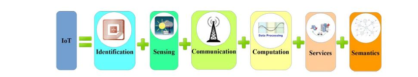
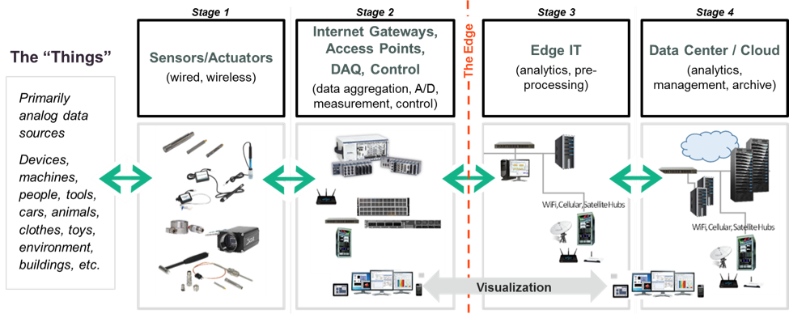

COMPONENTES DA INTERNET DAS COISAS
Componentes que compõem a infraestrutura da Internet das Coisas:- Arquitetura e Modelos de Referência
- Redes e conectividade
- Sistemas embarcados
- Sensores
- Atuadores
- Fontes de energia
- Definição
- Localizando
- Cloud e Fog Computing
Arquitetura e modelos de referência:
Existem muitas sugestões arquitetônicas e modelos de referência na literatura para definir o status atual ou futuro da IoT em termos técnicos:- Internet das coisas - Arquitetura (IoT-A)
- Arquitetura de Referência da Internet Industrial (IIRA)
- Modelo de Arquitetura de Referência Industrie 4.0 (RAMI 4.0)
- Modelo de referência de Internet das coisas da Cisco
- Camada de objeto ou dispositivo
- Camada de link(Network)
- Camada de aplicação
Redes e conectividade:
Existem várias tecnologias de rede para conectar objetos em diferentes locais, que podem variar de acordo com a área de aplicação.Mas, ao contrário de muitos dispositivos, os dispositivos IoT têm memória, fonte de alimentação e capacidade de processamento limitadas, e os protocolos tradicionais (especificamente, a pilha de protocolos TCP / IP) não são projetados com esses requisitos em mente.
Para esse propósito, protocolos de comunicação leves foram desenvolvidos nos últimos anos para criar interoperabilidade entre dispositivos IoT.
Principais exemplos de protocolos de comunicação baseados em IP padronizados para dispositivos IoT:
- Na camada de aplicativo;
- IETF Constrained Application Protocol (CoAP)
- Message Queuing Telemetry Transport (MQTT)
- IETF Constrained Application Protocol (CoAP)
- Na camada de rede;
- IPv6 e RPL (e uma versão para redes de área pessoal sem fio de baixa potência: “6LoWPAN”)
- IPv6 e RPL (e uma versão para redes de área pessoal sem fio de baixa potência: “6LoWPAN”)
- Na camada física;
- IEEE 802.15.4
- IEEE 802.15.4
O objetivo de "Low Power, Wide Area Networks" (Low Power, Wide Area Networks, LPWAN) tornou-se um problema central para a IoT nos últimos anos.
LPWAN é um termo amplo para uma variedade de tecnologias usadas para conectar sensores e controladores à Internet sem usar redes Wi-Fi ou celulares tradicionais.
Ao mesmo tempo, grandes empresas de comunicações de rede celular também estão desenvolvendo padrões de rede baseados em celular, como LTE-M e NB-IoT. Em particular, o NB-IoT é suportado pelos principais fabricantes e pelas 20 maiores operadoras móveis do mundo.
Outros exemplos de atividades que definem novos padrões mais adequados para casos de uso de IoT incluem LoRa e Sigfox.
Os tópicos de design predominantes em redes e conectividade:
- Baixo consumo de energia (mais de 10 anos de trabalho independente)
- Forte penetração / cobertura em ambientes internos / internos
- Vinculando vários sensores e dispositivos com requisitos de baixa largura de banda

Sistemas embarcados:
O mundo imaginado com computadores em todos os lugares não será realizado com a instalação de computadores em cada esquina da rua. Em vez disso, a funcionalidade será incorporada em objetos e espaços. Esses desenvolvimentos apoiam a difusão geral das tecnologias de informação e comunicação e até permitem a inclusão de pequenos objetos de vida curta. Além do aumento de desempenho e capacidade, a eficiência energética dos componentes também é um fator importante. Novos desafios surgem para a interface do usuário ao colocar computadores ou componentes em objetos físicos. Monitores, teclados e outros dispositivos de entrada e saída comuns nem sempre fornecem a solução ideal, há uma necessidade de novas metáforas e interfaces de usuário que sejam particularmente adequadas para interação intuitiva.Sensores:
Sensores são componentes técnicos usados para medição qualitativa ou quantitativa de certas variáveis e propriedades químicas ou físicas (por exemplo, temperatura, luz, aceleração, eletricidade, etc.). Os valores medidos geralmente são convertidos em sinais eletrônicos. É possível ver sensores em muitos lugares em nossa vida diária. Por exemplo, os carros modernos têm centenas de sensores, sensores de chuva para sistemas de limpador de pára-brisa, sensores de colisão para sistemas de lançamento de airbag e rastreamento de faixa e sensores de estacionamento. Ou seja, o automóvel comum está se tornando cada vez mais um objeto computadorizado unificado. Além disso, sensores; Quando usado em conjunto com um processador (controlador), uma fonte de alimentação e uma unidade para transmissão de dados, é chamado de nó sensor. Função primária de um nó sensor; aquisição, pré-processamento e transmissão de dados do sensor de seu ambiente para outros nós sensores ou uma estação base.Algumas categorias e exemplos de sensores são os seguintes:
- Localização: GPS, GLONASS, Galileo
- Biométrica: impressão digital, íris, rosto
- Acústico: microfone
- Ambiente: temperatura, umidade, pressão
- Movimento: acelerômetro, giroscópio
Atuadores:
Os atuadores permitem a intervenção ativa no sistema de controle e/ou configuração de variáveis, convertendo sinais elétricos (por exemplo, comandos do computador de controle) em movimento mecânico ou outras variáveis físicas (como pressão ou temperatura). Os tipos de atuadores podem ser listados como hidráulicos, pneumáticos, elétricos, mecânicos e piezoelétricos. A saída de sinais ópticos (via indicadores) ou acústicos também podem ser agrupados em atuadores, pois podem desencadear um efeito no ambiente real. Os atuadores desempenham um papel cada vez mais importante na execução das ações. Além disso, é um dos principais alicerces da Indústria 4.0, que se expressa como a "Quarta Revolução Industrial" na produção.Fonte de energia:
Embora muitas tecnologias estejam disponíveis atualmente ou pelo menos testadas em um contexto de pesquisa, alguns problemas técnicos permanecem que não podem ser resolvidos. Um dos fatores mais limitantes para a mobilidade de objetos inteligentes são as fontes de energia. Embora as baterias estejam ficando menores e mais potentes, os dispositivos móveis de hoje ainda têm capacidades de bateria muito limitadas. A extensa pesquisa em tecnologias avançadas de bateria fez uma melhoria relativamente pequena no desempenho da bateria. Mas esta tecnologia está constantemente atrasada em relação a outros desenvolvimentos tecnológicos relevantes, ela foi colocada em segundo plano. Para enfrentar esses desafios, muitos tópicos de pesquisa são perseguidos, incluindo projetos inteligentes que requerem menos energia da bateria. Ao contrário da ideia de que tudo deve estar sempre online, só às vezes basta saber o estado de um objeto. Isso pode ser alcançado com muito menos esforço e recursos em largura de banda e energia. Outra estratégia é coletar energia "em tempo de execução". Em outras palavras; Busca desenvolver tecnologias para o uso de fontes alternativas de energia como sol, vento e água e garantir sua integração em dispositivos portáteis. (Smartphones com células solares etc.)Identificação:
Um pré-requisito importante para relacionar informações com seres reais ao nosso redor é uma identificação clara de objetos e pessoas. O termo "tecnologias de Auto-ID (Auto-ID) e Mobilidade (AIM)" descreve várias subtecnologias que compartilham um propósito comum de identificar, rastrear, registrar, armazenar e transmitir dados comerciais, pessoais e de produtos importantes. Várias tecnologias de identificação, como biometria, códigos de barras e RFID estão disponíveis. As aplicações RFID conhecidas desde 1960 se tornaram um catalisador, especialmente para cenários de IoT. Os sistemas de identificação por radiofrequência (RFID) normalmente usam pequenas etiquetas com microchips embutidos que têm uma pequena quantidade de memória de computador e transmitem seu conteúdo por meio de sinais de rádio para leitores RFID específicos em uma curta distância. O leitor coleta esses dados, descriptografa-os e os envia por uma rede com ou sem fio a um computador host para processamento posterior. Na verdade, as etiquetas RFID podem ser consideradas códigos de barras eletrônicos. Mas, ao contrário dos códigos de barras, as etiquetas RFID não requerem contato visual para serem lidas. O leitor RFID consiste em uma antena com função de decodificação e um transmissor de rádio, podendo ser acoplado a um dispositivo fixo ou portátil. Os esquemas de endereçamento tornaram-se uma tarefa muito crítica para a identificação de objetos. O desafio no cenário de IoT é identificar bilhões de dispositivos com exclusividade e controlá-los para muitos cenários de aplicativos. Os desafios técnicos mais importantes são exclusividade, confiabilidade, continuidade e escalabilidade. O protocolo da Internet versão 6 (IPv6) e o código de produto eletrônico são blocos de construção importantes para a IoT. A ideia básica é encontrar informações sobre um objeto etiquetado (RFID) digitalizando um endereço de Internet ou um registro de banco de dados que corresponde a um código específico armazenado em uma etiqueta RFID. O Código de Produto Eletrônico (EPC) é o trabalho de desenvolvimento de um identificador universal que sempre fornece uma identidade única para cada objeto físico. Hoje, os conceitos são mais gerais e não se limitam apenas a RFID. Um objeto pode ser real / físico, mas também uma entidade virtual / digital que pode ser identificada exclusivamente por números de identificação, nomes e / ou endereços de localização atribuídos para um determinado período de tempo dentro de uma determinada área. Os conceitos correspondentes para objetos virtuais são Uniform Resource Identifiers (URIs) e endereços IP, que permitem identificar e descobrir a presença de um objeto na web.Localização:
Além da identificação, a localização de um objeto ou pessoa é uma das informações necessárias. As técnicas de geolocalização podem ser usadas para determinar a posição de um objeto externamente ou por si mesmo.Sistemas de posicionamento "globais":
- GPS (EUA)
- GLONASS (Rússia)
- Galileo (União Europeia)
- BeiDou (China)
Cloud Computing e Fog Computing:
Cloud Computing oferece excelentes recursos em termos de recursos de rede para armazenar e acessar dados relacionados ou obtidos de objetos conectados. No entanto, no que diz respeito a aplicativos sensíveis ao tempo que requerem nós no campo para atender aos requisitos de latência, a computação em nuvem pode ter algumas limitações, especialmente se milhões de dispositivos precisarem ser manuseados de maneira crítica. Podem surgir novos casos de uso que requeiram controle rígido de sensores ou atuadores fisicamente dispersos, mas especialmente colocados. Em resposta a estes desafios, é proposto o paradigma Fog Computing, que não substitui, mas expande, o paradigma da computação em nuvem. Fog Computing, uma plataforma altamente virtualizada, fornece serviços de computação, armazenamento e rede que não estão localizados na borda da rede entre os dispositivos finais e os centros de dados de computação em nuvem tipicamente tradicionais.

Conteúdo
- MAS AFINAL, O QUE É A INTERNET DAS COISAS (IoT) ?
- HISTÓRIA DA INTERNET DAS COISAS
- INTERNET DAS COISAS: DIFERENTES VISÕES E CONCEITOS
- COMPONENTES DA INTERNET DAS COISAS
- AREAS DAS APLICAÇÕES EM INTERNET DAS COISAS
- VANTAGENS E DESVANTAGENS DA INTERNET DAS COISAS
- TECNOLOGIAS DE COMUNICAÇÃO E DE DESENVOLVIMENTO EM INTERNET DAS COISAS
- OneM2M COMO UM PADRÃO DE IoT
- ECLIPSE OM2M